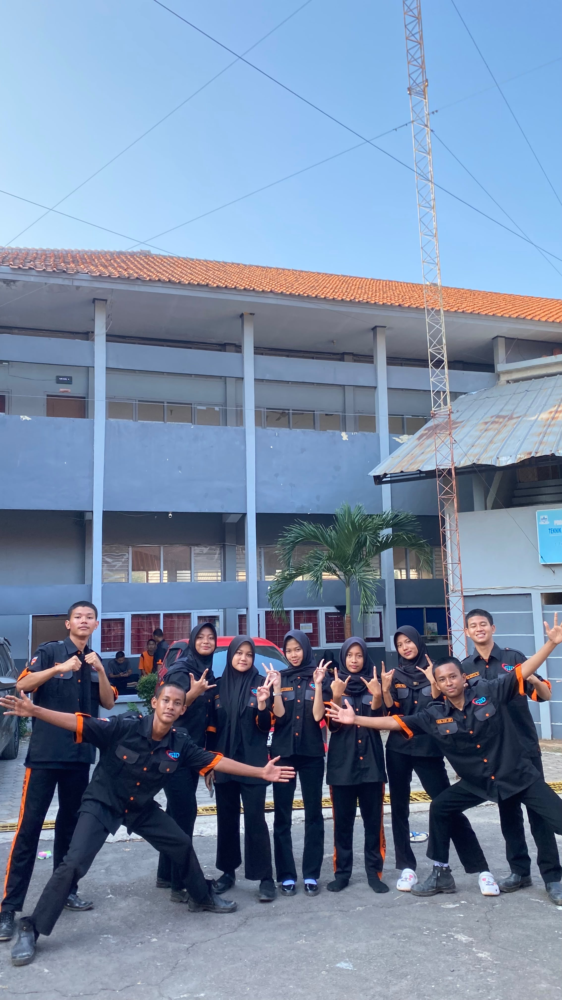
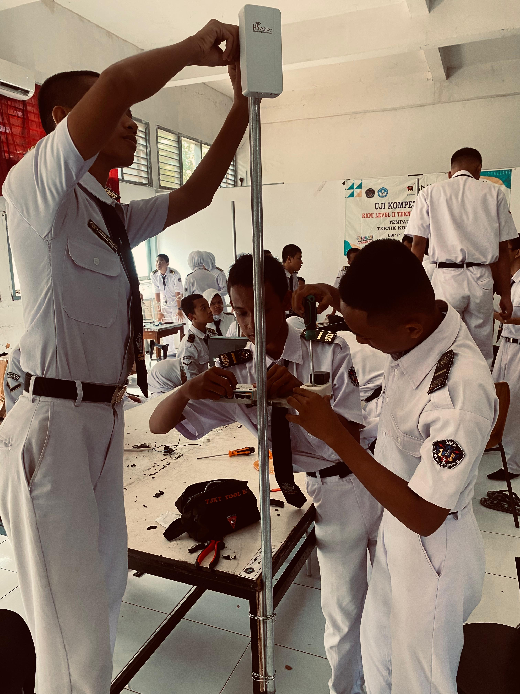
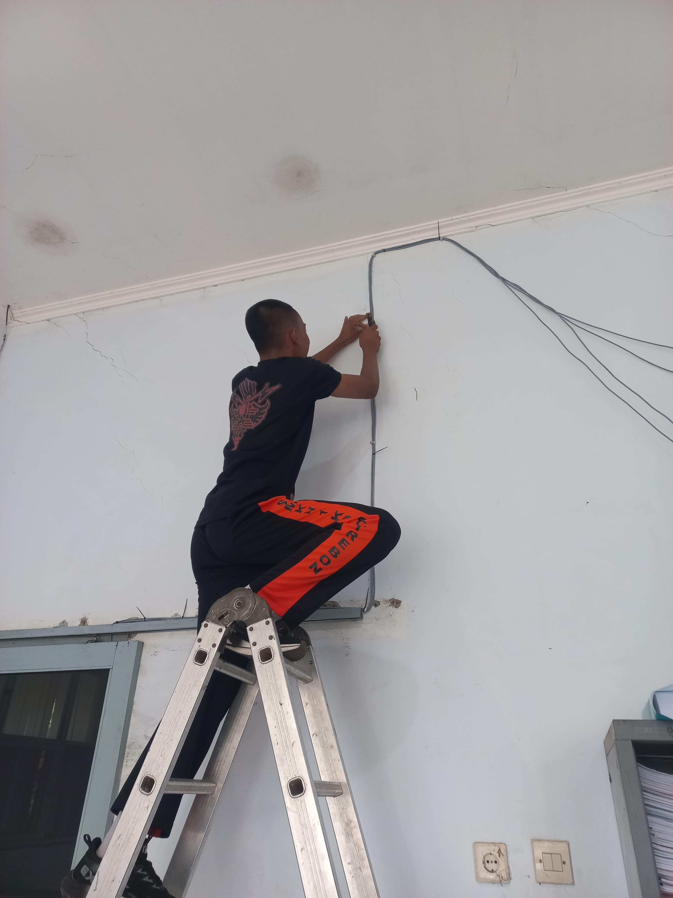
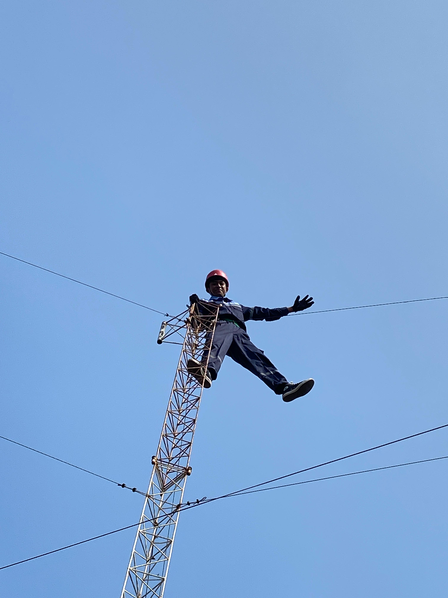

Halo, saya Nova.
Siswa kelas 2 SMK yang masih belajar, masih banyak salah, dan sedang mencoba rajin.
Saya Nur Dwi Nova Pramajaya. Biasa dipanggil Nova. Sekolah di SMKN 1 Cirebon, kelas XI TJKT 2.
Saya belum punya prestasi besar. Belum pernah ikut lomba. Belum pernah magang. Yang saya punya cuma rasa penasaran dan kebiasaan iseng ngutak-atik komputer.
Kadang berhasil, kadang malah rusak. Tapi selalu ada yang bisa dipelajari — dan itu yang bikin saya ketagihan.
Yang sedang saya pelajari
// empat hal yang paling sering saya utak-atik
Jaringan Komputer dasar
LAN, MAN, WAN, topologi, IP addressing. Pelajaran utama jurusan saya.
Konfigurasi Jaringan praktik
Setting MikroTik, access point, dan switch. Belajar di lab sekolah.
Web Dasar iseng sendiri
HTML dan CSS. Belajar dari YouTube, bukan pelajaran sekolah.
Linux Server praktik bersama guru
Debian di VMware, mode CLI. Belajar konfigurasi server bersama guru.
Data diri.
Beberapa informasi singkat tentang saya. Apa adanya.
Keahlian & yang sedang dipelajari.
Saya tidak pakai angka persentase. Semua masih dalam tahap belajar — jadi saya tulis apa adanya.
Jaringan Komputer
Lumayan pahamPelajaran utama jurusan saya. Sudah paham konsep LAN, MAN, WAN, topologi jaringan, dan IP addressing. Sudah praktik bikin kabel LAN, setting switch, dan simulasi topologi di sekolah.
Konfigurasi Perangkat
Sedang mendalamiBelajar setting MikroTik dan access point. Sudah bisa basic-nya, tapi masih sering lupa command dan harus buka dokumentasi. Wajar kan? Namanya juga belajar.
HTML & CSS
Baru mulaiBelajar sendiri dari YouTube dan dokumentasi. Bukan pelajaran sekolah. Sudah bisa bikin halaman statis sederhana — salah satunya ya website yang sedang kamu buka ini. Masih jauh dari mahir.
Linux Server Dasar
Sedang mendalamiPraktik Linux di sekolah. Pakai Debian yang di-install di VMware dengan mode CLI. Belajar konfigurasi IP static dan DHCP, install SSH, install FTP, dan konfigurasi Debian server untuk WordPress. Masih tahap belajar — banyak yang harus diulang.
Galeri kegiatan.
Kumpulan foto — kegiatan sekolah, momen bareng teman, dan hal-hal sehari-hari. Klik untuk memperbesar.
 Foto SD
Foto SD
 Foto SMP
Foto SMP
 Foto SMK
Foto SMK
 Foto TOP 3 Rank kelas
Foto TOP 3 Rank kelas
 Foto Rank 2 kelas
Foto Rank 2 kelas
 Foto bersama sahabat sd
Foto bersama sahabat sd

Foto bersama fixlolos
Praktik membangun jaringan LAB6
Praktik memasang Telepon PABX
Praktik manjat towerMari ngobrol.
Kalau ada yang mau ditanyakan — soal jaringan, tugas sekolah, atau cuma mau say hi — silakan hubungi lewat salah satu di bawah.
Jaringan Komputer.
Bagian yang paling sering saya pelajari di sekolah.
Jaringan komputer itu sederhananya: cara menghubungkan dua komputer atau lebih supaya bisa saling ngobrol. Entah untuk kirim file, sharing printer, atau sekedar main game bareng.
Saya belajar ini dari kelas 10. Awalnya bingung karena banyak istilah asing. Tapi lama-lama mulai masuk juga setelah sering praktik langsung di lab sekolah.
Jenis-jenis jaringan
- LAN — jaringan area kecil, biasanya satu ruangan atau satu gedung. Contohnya wifi rumah.
- MAN — jaringan yang lebih luas, mencakup satu kota.
- WAN — jaringan antar kota hingga antar negara. Internet adalah contoh WAN terbesar.
Perangkat yang saya kenal
Di lab sekolah kami ada beberapa perangkat yang sering dipakai: router untuk mengatur lalu lintas data, switch untuk menghubungkan banyak komputer, dan access point untuk memancarkan wifi. Masing-masing punya peran berbeda.
Kesulitan yang saya hadapi
Yang paling susah buat saya waktu awal-awal adalah memahami IP addressing dan subnetting. Rasanya seperti belajar matematika lagi. Tapi sekarang sudah lumayan paham setelah diulang-ulang.
Konfigurasi Jaringan.
Router, access point, dan perangkat lain.
Kalau jaringan komputer itu teorinya, konfigurasi jaringan itu praktiknya. Di sini saya belajar setting perangkat supaya jaringan bisa benar-benar berjalan.
Perangkat yang biasa saya setting
- Router MikroTik — untuk mengatur routing dan DHCP. Yang paling sering dipakai di lab kami.
- Access Point — untuk memancarkan wifi.
- Switch manageable — untuk mengatur VLAN.
Hal yang saya pelajari
Sejauh ini yang saya kuasai baru dasar-dasarnya: setting IP address, DHCP server, dan wireless security. Belum sampai ke level firewall rule atau routing dinamis. Tapi pelan-pelan.
Tools yang dipakai
Di sekolah kami biasanya pakai Winbox untuk setting MikroTik. Untuk simulasi di rumah, saya pakai Cisco Packet Tracer yang bisa didownload gratis.
Web Dasar.
Belajar sendiri, di luar jam sekolah.
Ini bidang yang saya pelajari sendiri. Awalnya cuma iseng lihat teman bisa bikin website, terus kepikiran "bisa nggak ya saya juga?"
Tiga pondasi
- HTML — bikin struktur halaman. Ini paling gampang.
- CSS — mengatur tampilan biar enak dilihat. Ini yang paling lama saya pelajari.
- JavaScript — bikin halaman jadi hidup. Ini yang paling susah, masih baru mulai.
Bagaimana cara belajar saya
Saya bukan tipe yang belajar dari buku tebal. Cara saya: nonton video di YouTube sambil langsung coba di laptop, baca dokumentasi kalau bingung. Kadang berhasil, sering juga gagal.
Hasil sejauh ini
Website yang sedang kamu buka ini adalah hasil latihan saya. Sebelumnya saya pernah bikin satu halaman profil sederhana — itu jadi titik awal saya belajar web.
Linux Server.
Praktik Linux di sekolah.
Ini materi Linux yang saya pelajari di sekolah. Kami praktik langsung pakai Debian yang di-install di VMware, dan semuanya dijalankan lewat mode CLI — tanpa tampilan grafis, cuma terminal hitam dengan tulisan putih.
Awalnya susah banget. Sering salah ketik command, lupa posisi direktori, dan bingung baca error. Tapi karena dibimbing guru dan diulang terus, pelan-pelan mulai kebiasa.
Yang saya pelajari
- Konfigurasi IP static — supaya server punya alamat IP tetap, tidak berubah-ubah.
- Konfigurasi DHCP — supaya server bisa membagikan IP otomatis ke klien.
- Install dan konfigurasi SSH — supaya bisa remote server dari komputer lain lewat jaringan.
- Install dan konfigurasi FTP — untuk membuat file server di Debian.
- Debian server untuk WordPress — konfigurasi web server dan database supaya WordPress bisa jalan di Debian.
Kesan selama praktik
Seru tapi bikin pusing. Kadang satu langkah salah, seluruh konfigurasi harus diulang dari awal. Tapi dari situlah saya belajar teliti — karena di terminal, salah satu huruf saja bisa bikin error.
Yang paling saya suka waktu berhasil remote server pakai SSH dari komputer lain. Rasanya kayak "wah, saya beneran bisa begini ya". Kecil sih, tapi lumayan bangga.
Kamu menemukan halaman ini.
Halaman ini tidak ada di menu. Tidak ada link ke sini. Kalau kamu ketemu, berarti kamu menekan kombinasi tombol yang cuma disebutkan samar-samar di bagian bawah website.
Saya suka orang yang penasaran. Karena saya juga dulu mulai belajar dari rasa penasaran — pengen tahu aja gimana caranya bikin website.
const modal = "penasaran + mau nyoba";
const hasil = modal.repeat(∞);
// nggak ada jalan pintas.
// yang penting jangan berhenti.
Selamat, kamu dapat easter egg dari Nova.
Tetap penasaran ya.